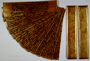

Kammavaca. Pali. Handschrift op zestien vergulde koperen platen met tekst in lakwerk en met houten platten, 100 x 545 mm. Birma, twintigste eeuw. -- (Or.17.959)
In de Birmese kloosters werden Kammavaca-handschriften (een boeddhistische canonieke tekst) gewoonlijk geschreven in het archaïsche Pali kwadraatschrift op vergulde stroken schrijfmateriaal. Vaak werden hiervoor gemalen textielresten van monnikspijen gebruikt, waarvan dan stroken schrijfmateriaal gemaakt werden die ongeveer hetzelfde uiterlijk kregen als het hier getoonde handschrift, dat echter uit dunne koperen platen bestaat. Andere schrijfmaterialen die voor deze teksten werden gebruikt, zijn palmblad en ivoor. Het is opvallend, dat ongeacht het schrijfmateriaal toch steeds de vorm van palmbladen is gehandhaafd.
De dunne koperen platen zijn eerst verguld, daarna voorzien van rode ornamentering, en ten slotte aan beide zijden beschreven met tekst in lakwerk. Houten platten, die in dezelfde stijl zijn uitgevoerd, beschermen de bundel platen. Het geheel wordt bewaard in een van textiel en rietstokjes vervaardigd omhulsel, dat kan worden dichtgebonden. De platten en koperen platen zijn voorzien van een gat, waardoorheen waarschijnlijk een koord heeft gelopen om de platen op hun plaats te houden.
Literatuur
- Heinz Bechert, Daw Khin Khin Su and Daw Tin Tin Myint, Burmese manuscripts, Pt. 1. Wiesbaden 1979 (= Verzeichnis der orientalischen Handschriften in Deutschland. XIII, 1), p. xvii, pl. III, p. 56-58.
| vorige pagina | top pagina |